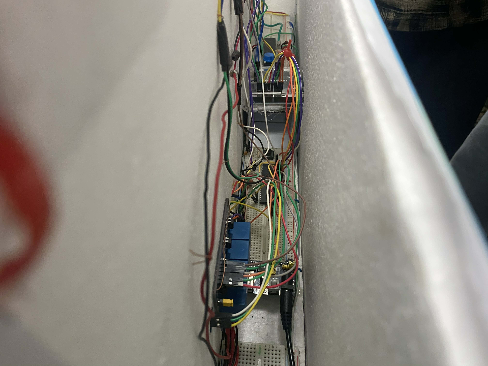
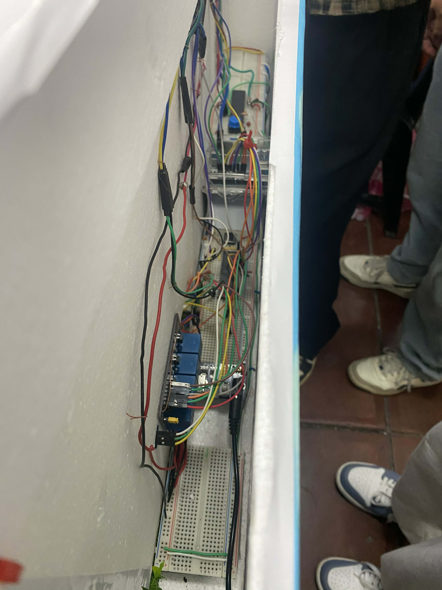
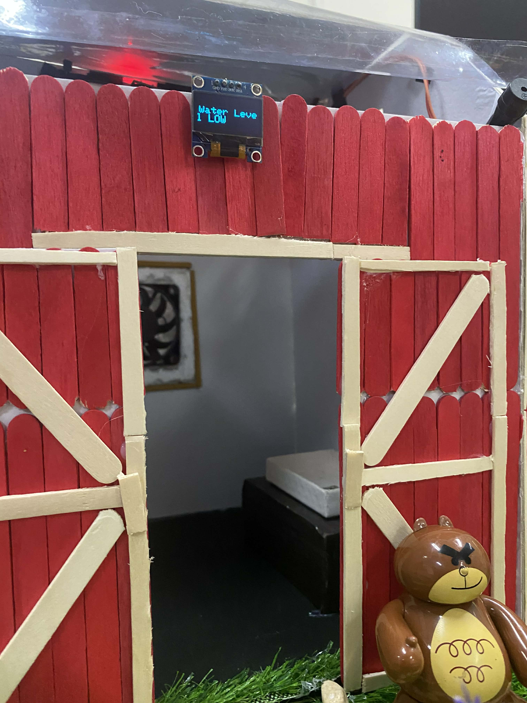
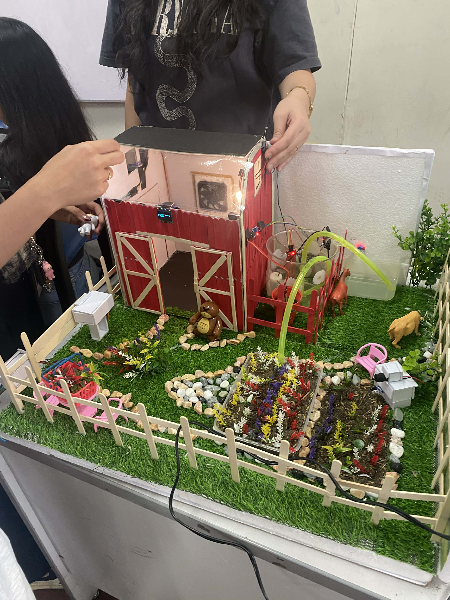
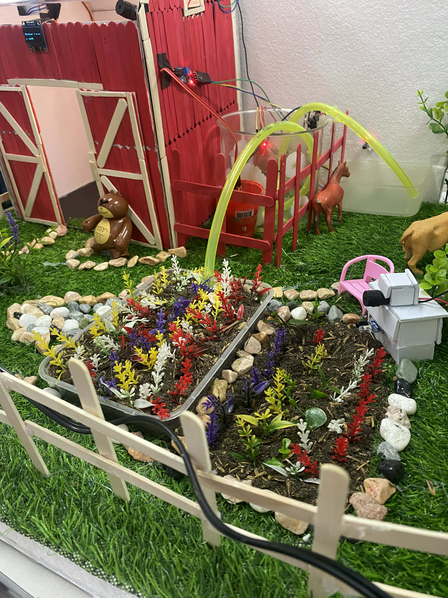
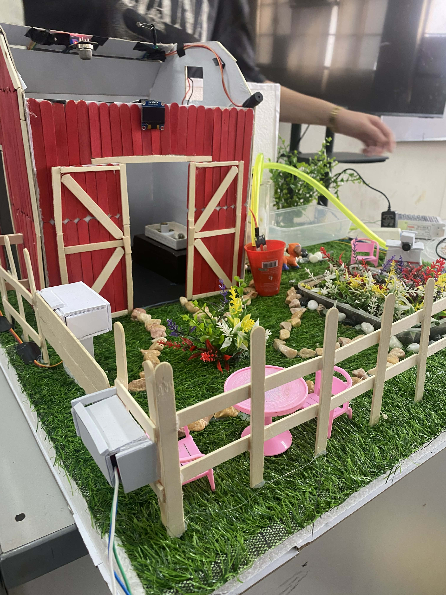

Main Core System View 1

Main Core System View 1

Farm View 1

Farm View 2

Farm View 3

Farm View 4

Farm Overall View






This is a Mini Smart Farm Embedded System which runs by C code.
It simulates a smart farm system which automates some of the farm's necessity such as smart gate, automatic watering system for both farm animals and plants, Smoke Detector, and Automatic Night Light.